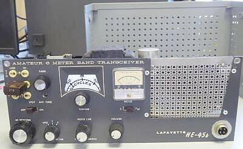
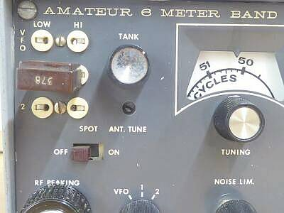
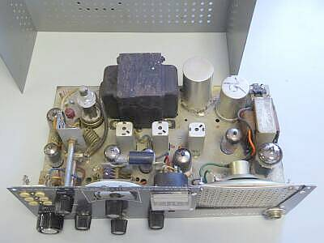
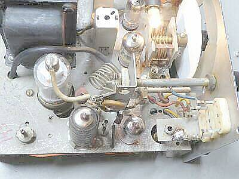
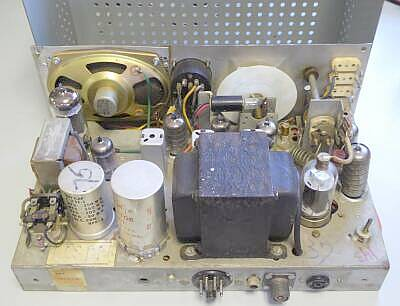
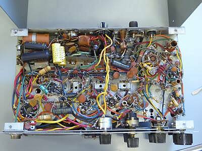
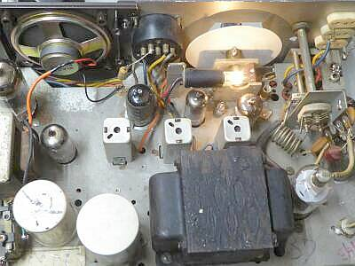
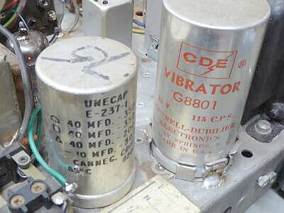
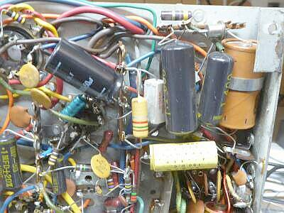

 |
入手した時点でスピーカーのパンチング・メタルは、オリジナルではありません
あと、ＲＦ－Ｔｕｎｅツマミとマイク・ジャックが、たぶんオリジナルではないと思われます
その他は、オリジナルです
送信ファイナル調整ツマミは、プレート同調のみ
ロード側は、半固定…フロントパネルからドライバを差し込んで調整！です |
 |
ファイナル・ロード側の調整穴は、プレートＴｕｎｅツマミの下に配されています
ＴＡＮＫ：プレート同調
ＡＮＴ．ＴＵＮＥ：ロード側同調 |
 |
上蓋を開けたところを写しました
左サイドが送信部です
変調トランスは、右端にレイアウトされています |
 |
送信部のアップ
クリスタルソケットのアース側鈴メッキ線が断線
目視では分からず、この症状に悩みました
クリスタルの差し込み方で送信できたりできなかったり？？？
パネルの強度が弱いのがきっと直接の原因！
しっかり半田付けしました！
ファイナルは２Ｅ２６で、わずか２球構成（前段は、６ＥＡ８）
右下の球は、受信のＴＯＰ １２ＢＺ６です |
 |
こちらは背面側より写したもの
スピーカーは、純正ではないと思われます
電源供給は、８ＰＧＴプラグのところで、ＡＣ１２０Ｖ、ＤＣ１２Ｖそれぞれのケーブルを使用することで対応します
|
 |
シャーシ下側を写したもの |
 |
スピーカー・グリル（パンチングメタル）が弱弱しいので、スピーカーごと、手持ちのものを、本機のサイズに加工して交換しました
厚手のプラスチック・パネルです
それなりに古い時代のものを使用したので、ＴＯＰの写真のとおり違和感はあまり感じません（全体イメージが暗くなりました！）
パネルへの取付を、ハトメを外してビス止めしたもので、この頭が異常に新しく見えます
その他は、オリジナルのままです
|
 |
DC-DC対応はメカ式…バイブレータの採用です
この時代では、標準的な構成でしょう
送受切り替えは、左下に見える２極のものひとつだけです（ＡＮＴ切り替えはありません／後述） |
 |
やはり電解コンデンサの容量抜けは否めません
受信時、ハム音が気になります
横着をして、３６０Ｖ５０μＦを追加しました（黒い縦型コンデンサ） |
|
送信は、クリスタル・アース側の問題解決で簡単に６～７Ｗの出力が得られました
クリスタルは、６逓倍のものを使用します（ＴＸ-８８Ａ／Ｄなどと同じ）
ところが受信感度が思うように得られません
ＲＦトップ・・・Ｐｉｎ２がカソードの配線、Ｐｉｎ７が接地されています
１２ＢＡ６であれば、これは逆です
ここは配線優先で、１２ＢＺ６に交換しましたが、まだ感度が足りません（５μＶ入力でＳ／Ｎ１０ｄｂ程度）
Ｍｉｘが３極管接続になっていましたので、ＷｅｂにあるＨＥ-４５の回路を参考に５極管接続しにしてみたところ、ゲインは上がりますが、思うように感度が上がりません
色々やってみていると、初段のＩＦＴのアース部分をなにかで抑えると感度が上昇します
ＩＦＴのシールド板をシャーシに直接半田付けすることで感度が安定して上昇しました
古くなるといろんな症状が出ます・・・感度低下の一番の原因は、この点でした
ここで、Ｍｉｘをオリジナルの３極管接続に戻しました
なんと、５極管接続より感度も上がり、動作も安定になりました（４５→４５Ｂの改良点のひとつでしょう）
ＨＥ-４５と、このＨＥ-４５Ｂの違い
回路的には、先に記したように受信Ｍｉｘである６ＥＡ８の使い方が異なります
管球構成では、ＡＦパワー管が６ＡＱ５ではなく、一回り大きい７８６８（７５９１Ａ同等）が採用されています
入力１２Ｗにきちんと変調をかけるには、６ＡＱ５では確かに力不足でしょう
最終的な受信感度ですが、１μＶ入力でＳ／Ｎ９ｄｂ（１ＫＨｚ３０％変調ＯＮ／ＯＦＦ）程度で、ほぼ仕様通りかと思われます（音量は、十分得られます）
ＲＦ入力コイルが、送信のπマッチを兼用（アンテナ切替なし！）のため、昇圧による利得は期待できませんので、受信感度とすればこんなところでしょう（高１中２のシングル・スーパーで、送信６～７Ｗに対する感度としては十分かと）
使用感ですが、シングル・スーパー・ヘテロダイン・・・・５０ＭＨｚ前後を簡易なＬＣで一発発振させているわけで、安定度には課題があります
ＱＳＯとなったら、ダイヤルから手が離せないかも、です（通電後、一定の時間を経過すれば、それなりに安定はします） |